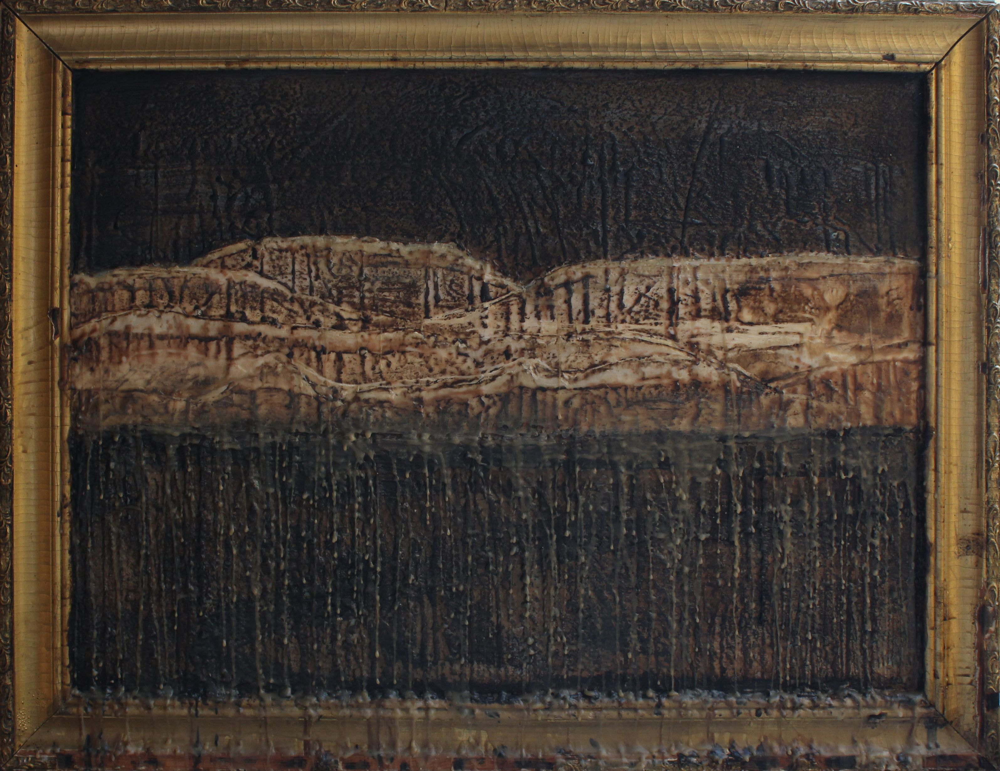

Landscapes from Memory
2025
wood, wax, paraffin
This series of works is about places that are deeply important to me, yet currently unreachable.The primary medium is wax and paraffin. Their physical properties emphasize the sense of fluidity, fragility, and the impossibility of preserving the clarity of memories. The scent of these materials also plays an important role, carrying me back to my childhood.
TMany of my recent works depict the quarry in the village of Mohrytsia in the Sumy region, where the land art symposium Borderland Space used to take place. This site is significant both for me personally and for the entire Ukrainian land art community. Due to the war, the symposium can no longer be held there.
One of the works recreates a memory of watching a comet in the summer of 2020 above the quarry during the symposium. These memories are especially warm because, after the severe restrictions of COVID-19, there was once again a chance to travel, to see friends and colleagues. In the context of the war, this memory gains even greater value: back then, we looked to the sky in search of comets and meteor showers, not enemy drones.
click to see full size{kind=link}
{kind=link}
{kind=link}
{kind=link}
{kind=link}